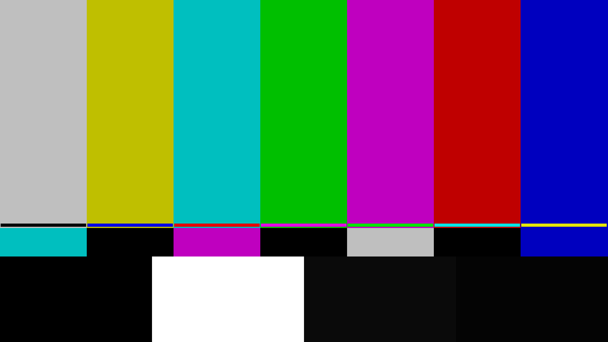
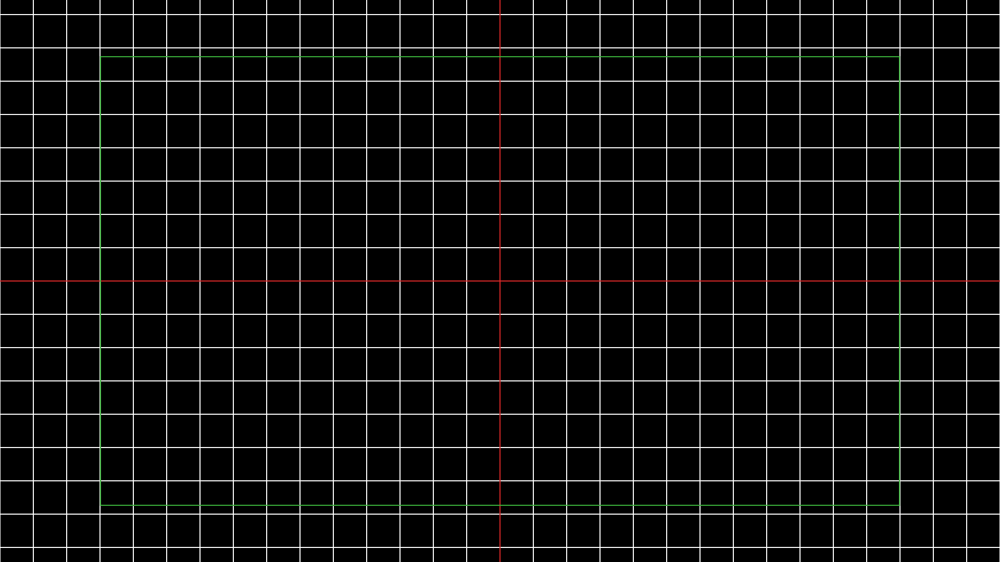
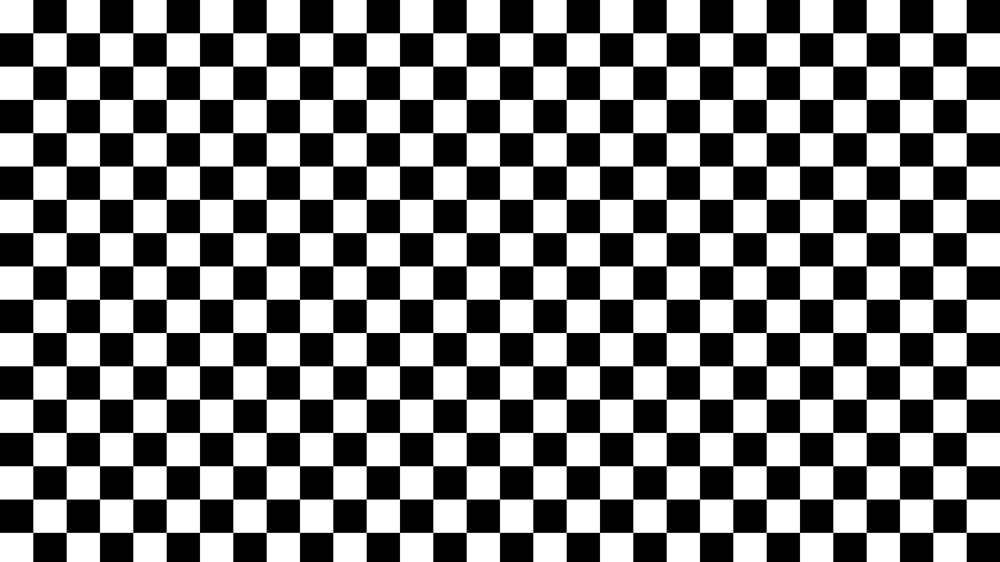
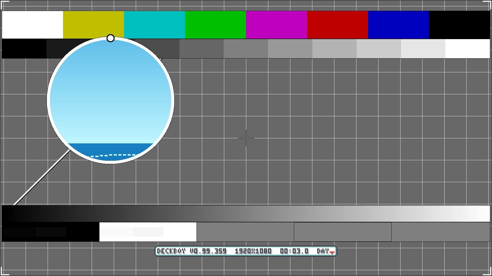
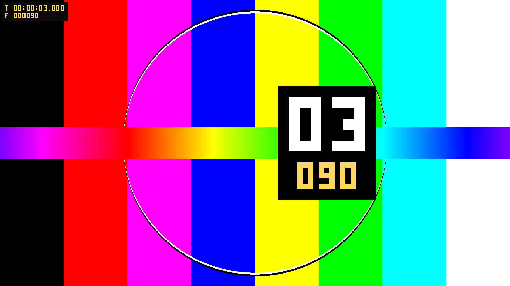
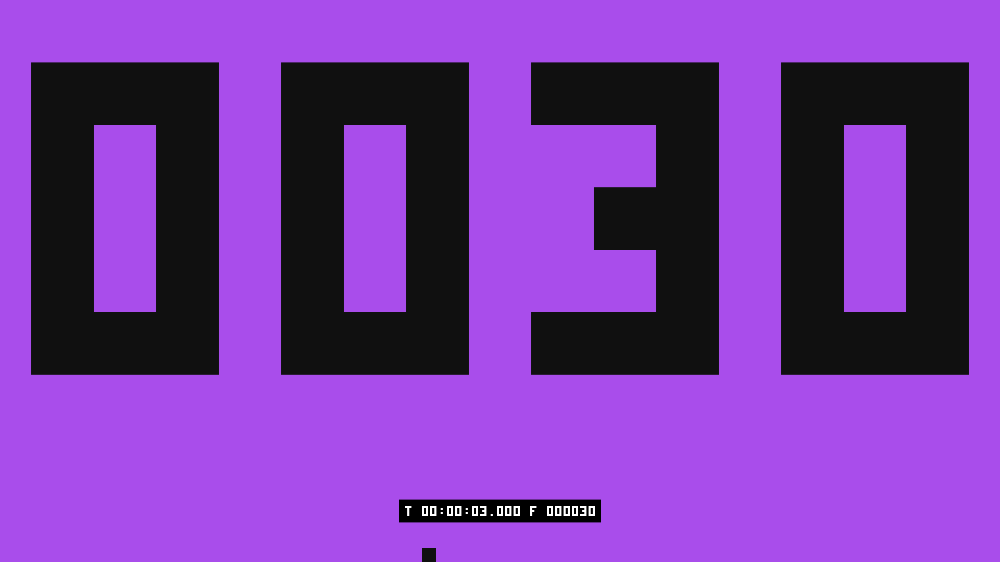
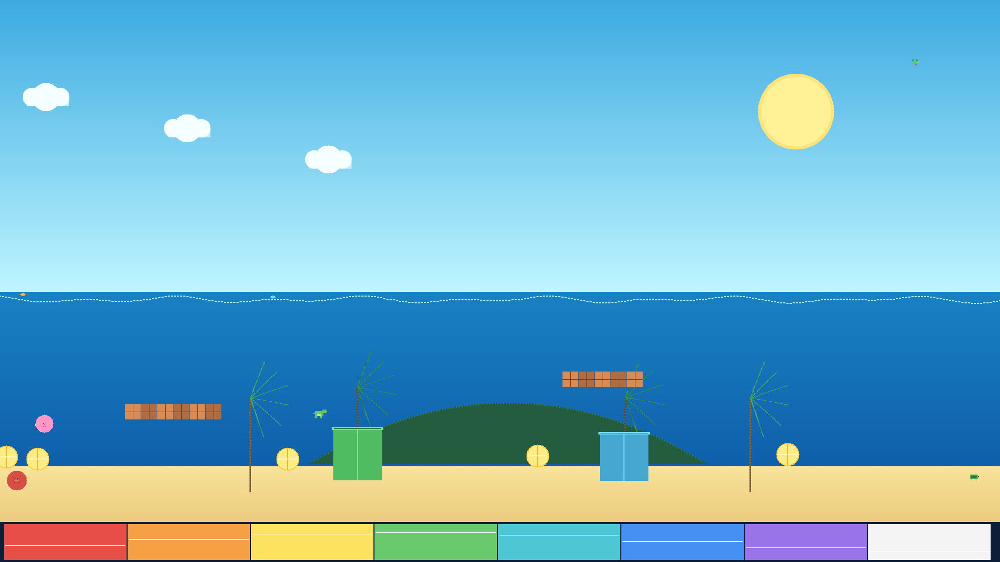
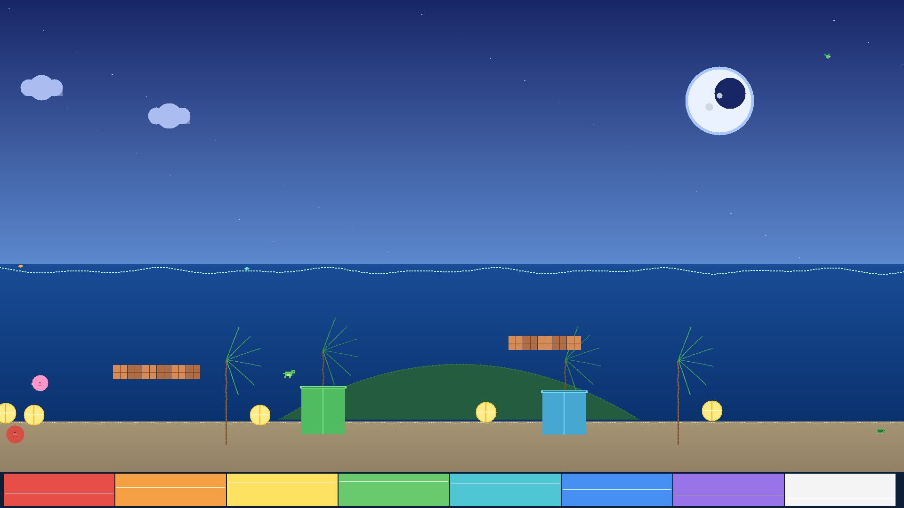

Eight cards at 1920×1080. Take them — you do not need Deckboy to use them.
Somebody hands you a cable and a screen and asks whether it is right. These are what answers that. Each one is aimed at a specific way a signal chain goes wrong, and between them they will find most of what goes wrong before doors.
No sign-up, no watermark, no email. Right-click and save, or take the lot.
The whole kit — eight PNGs at 1920×1080, with a note on what each one catches.

Colour and levels. The pluge strip along the bottom is the one that matters: it tells you whether black on that screen is actually black.

Geometry and convergence. Straight lines go bent long before a picture looks wrong, and the safe-area box shows what a projector is quietly eating off the edges.

Scaling and overscan. A scaler that is not running 1:1 turns these squares into moire the instant you look at them.

The whole chain on one card, in the PM5544 tradition: bars, a grey staircase, geometry, and a moving element so a frozen frame cannot pretend to be a live one.

Latency, measured rather than argued about. Put it on two screens, photograph both in one shot, read the difference. The counter is exact, not a spinning wheel you have to judge.

Dropped and repeated frames. Shoot it at a high shutter speed and count: a number that appears twice, or not at all, is a frame that did not survive the chain.

A picture rather than a chart. Gradients, fine detail and saturated flats in the same frame, which is where banding and posterisation show up and bars never will.

The same scene after dark, for black level and shadow detail. A screen that looked perfect on bars can still crush everything below ten percent.
Put the card up, then walk the chain rather than the picture. Bars first, because a black level that is wrong makes every later judgement wrong too. Then crosshatch, at the screen, from where the audience sits — keystone looks fine from the booth. Then the checkerboard, close, because that is the one that catches a scaler nobody told you about. Then a real picture, because charts cannot show you banding.
If two screens have to agree, the latency clock settles it in one photograph. If a recording or a stream is suspect, the frame counter at a high shutter speed will tell you exactly which frames went missing.
Deckboy generates them. It is a free, open-source cue player for live video, and it makes these patterns live, at whatever raster and refresh the output is actually running — which is the version you want, because a 1080p PNG stretched onto a 1200-line projector is testing the stretch as much as the projector. Several of them move, too, and a still cannot.
So the files above are for the situation where you need bars on a screen in the next ten minutes and installing something is not on the table. If you are going to be doing this again next week, the application is free as well.
Where latency hides in a live chain · The patterns Deckboy generates
{kind=link}
{kind=link}
{kind=link}
{kind=link}
{kind=link}
{kind=link}
{kind=link}
{kind=link}